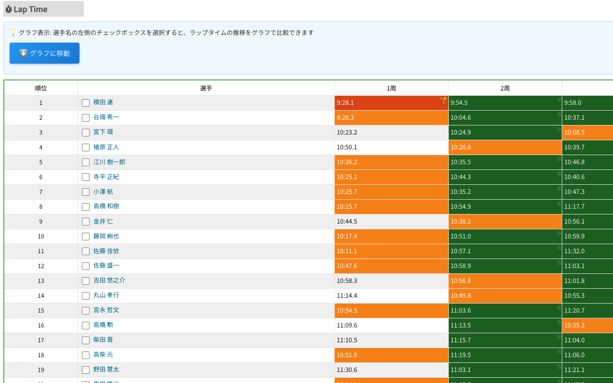
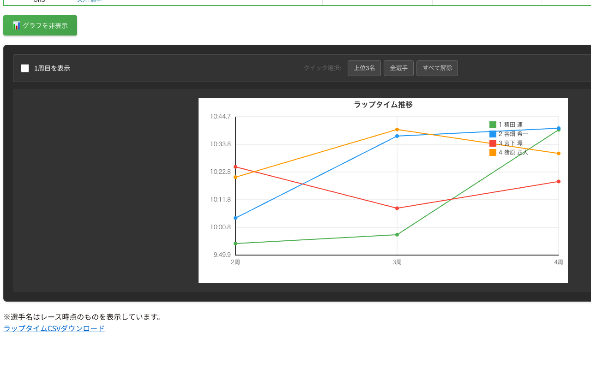

AJOCC公式リザルトページの経過時間をネットラップタイムに自動変換し、グラフで可視化。レース分析がワンクリックで完了します。
リザルトページを開くだけで自動的にラップタイム分析が始まります。
経過時間からネットラップタイムを自動算出。ラップタイム掲載のレースにも対応し、経過時間への変換も行います。
各選手の個人ベストとレース全体のベストラップを自動検出。スタートループを賢く除外して判定します。
複数選手のラップタイム推移を折れ線グラフで比較。どの周回で差がついたかが一目でわかります。
インストール後、設定不要でそのまま動作。AJOCC公式リザルトページを開くだけで自動的に起動します。
システムのカラースキーム設定に自動追従。夜間でも目に優しい表示を提供します。
ツールバーのアイコンをクリックするだけで変換のON/OFFを切り替え。設定は次回以降も保持されます。
AJOCC公式リザルトページ上で動作する拡張機能の画面です。

経過時間をネットラップタイムに変換し、ベストラップをハイライト表示。ホバーで元の経過時間も確認できます。

選手を選択してラップタイムの推移を比較。ペース変動やタイム差が一目でわかります。
Chrome Web Storeからワンクリックでインストールできます。
GitHubからソースコードをダウンロードします。
git clone https://github.com/gentksb/AjoccToys.git
chrome://extensions/ を開き、デベロッパーモードをONにして cyclocross-extension フォルダを読み込みます。
AJOCC公式リザルトページにアクセスするだけ。自動でラップタイムの変換と分析が始まります。